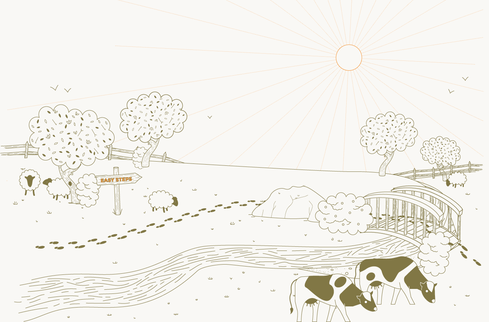
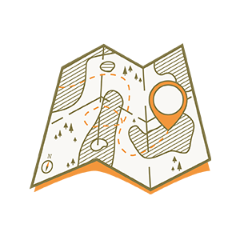

MotorCycle
关于
旅行
品牌
开启
你的奇遇

两个简单步骤
步骤 1
你需要什么？

步骤 2
你想去哪里？
沿G318国道南线到西藏从四川省省会成都开始，几乎正西，途经雅安和泸定，后稍攀爬即可到达康定和新都桥这个令人惊叹的村庄，是旅游业的亮点摄影师。从那里向东，不断攀爬,越走越高，经过理塘，在马尔康进入西藏.当你经过林芝县时，这条路线会带你通过邦达，巴苏，波密，然后击中林芝市，然后继续通过贡博甘达县和巴苏木措，最后到达拉萨。
川藏公路南线到拉萨的海拔变化有些地方很大，有些地方很小，这取决于你在路上的位置。从海拔500米左右的成都出发，离开雅安后不久，公路开始向成都西部爬升，到二郎山隧道时，已经海拔2000多米。四川山区与青藏高原的分界线在海拔4298米的哲多山口，是线路下端的最高点。新都桥海拔约3300米，但当你到达林芝时，你已经再次下降到3100米。这个上下的高度范围沿着整个路线，直到你到达拉萨3656米。